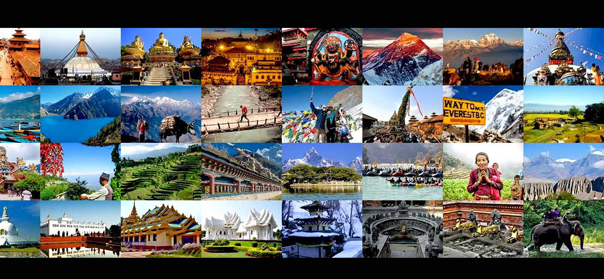

|
The year 2020 has been announced as "Tourism Year for Nepal" and to make #VisitNepal2020 successful, let every Nepali unite & promote the beauty of NEPAL |
|
The Visit Nepal 2020 campaign was scheduled in 2018 to promote that Nepal was a safe place to travel and only 12 of 75 districts were affected by the earthquake. The crawling upgrading activity of Tribhuwan International Airport and delayed construction of Gautam Buddha International Airport in Lumbini and improper transportation infrastructure led the Tourism Board to postpone the campaign to 2020. |
WHY SHOULD YOU VISIT NEPAL? |
Nepal is fifth among the Top 10 countries to visit in the world and number one in Best Valued Destination in the World. Why wouldn’t they be, Nepal boasts pristine natural beauty, sky-high Himalayas Range and endless culture and traditions spread out all over the country. |
|
One of the reasons to visit Nepal is for trekking and climbing mountains. You can climb to the top of the World by scaling and conquering the Everest, the highest peak in the World. Trekking comes with viewing the natural beauty of Himalayas and knowing the lifestyle of people living in altitudes above 4000 meters. |
CULTURE TRADITION AND UNESCO WORLD HERITAGE SITES |
Nepal is also rich in culture and traditions. There are countless ethnic groups each following their distinct art and religions. This diverse traditions and lifestyle is a prominent feature of Nepalese people. |
PREPARATION FOR VISIT NEPAL 2020 |
The government of Nepal is working rigorously to ensure a successful tourism period till 2020. The Tourism Board set a target of 2 million tourist arrival in 2020. Currently, the country sees nearly one million tourist visitors yearly and expect to double this number promoting Visit Nepal Campaign aggressively. At the moment, the tourism board is running Visit Nepal Europe campaign supported by ambassadors and diplomats of Nepal in European countries. |